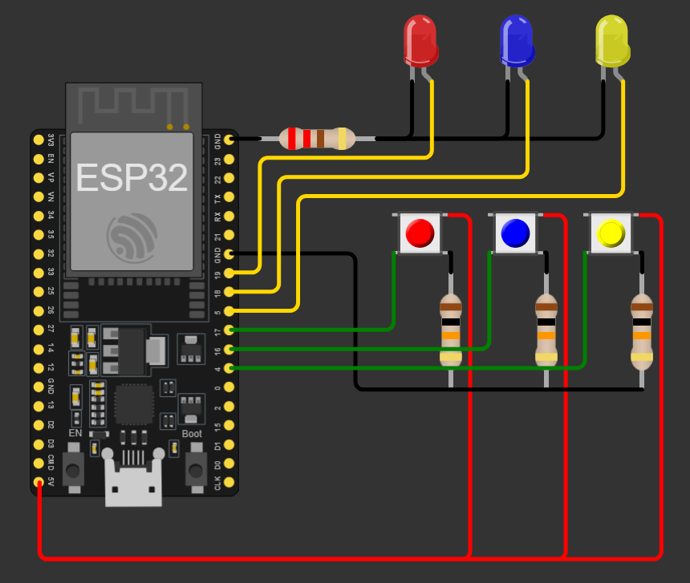

<html lang="en">
<head>
  <meta charset="UTF-8">
  <meta name="viewport" content="width=device-width, initial-scale=1.0">
  <title> pagina principal </title>
</head>
<body>
  
</body>
</html>
<html>
  <head>
    <title> mis proyectos </title>
    <link rel="stylesheet" type="text/css" href="style.css">
  <body>
    <h1>soy lorenzo y estos son mis proyectos</h1>
    <a href="pages/proyecto1.html">primer proyecto</a>
    <p> Este proyecto se basa en el juego "Simón dice", en el que se te darán ciertas órdenes o patrones que debes realizar para ganar. </p>
    <h2> </h2>
  </body>

  <body>
    <a href="pages/proyecto2.html">ir al segundo proyecto</a>
    <p> Este proyecto es una calculadora hecha en Python con las operaciones básicas (suma, resta, división, multiplicación, raíz y potencia), todo esto utilizando lo aprendido en clases. </p>
    <h2>  </h2>
  </body>

  <body>
    <a href="pages/proyecto3.html">ir al tercer proyecto</a>
    <p>Este "proyecto" consiste en tres códigos en Python hechos con la placa ESP32. La plataforma utilizada fue Wokwi.</p>
    <h2>  </h2>
  </body>

  <body>
    <h6> Balatro no es solo un juego de cartas, es un estilo de vida. Respiro y tomo Balatro. Si tuviera un hijo lo llamaría "Full House" y si tuviera dos les pondría "Doble" y "Par" para mejorarlos a nivel 18 y que rompan las ligas de jefe cuando sean adultos. Brindo por Balatro, Como por Balatro, este me hizo mejor persona, y cuando tengo el celular descargado, cierro mis ojos para jugarlo en mi mente. La rueda de la fortuna dicta mi vida. Siempre tengo un plátano en mi bolsillo para sumar puntos. Me identifico con el Joker "Misprint" porque mi estado mental es así de inestable. No puedo subir las escaleras sin pensar en Balatro y el dia que muera espero que pongan en mi tumba "Murio en pleno Balatreo". El unico corazón que quiero es el de la reina. Mi papá cree que estoy mal, pero él no sabe lo que es ser la carta más alta de la familia. El día que el juego ya no tenga fans es porque ya no estaré en este mundo. Gracias al balatreo por tanto y perdon por tan poco.</h6>
  
  </body>    
</html>
